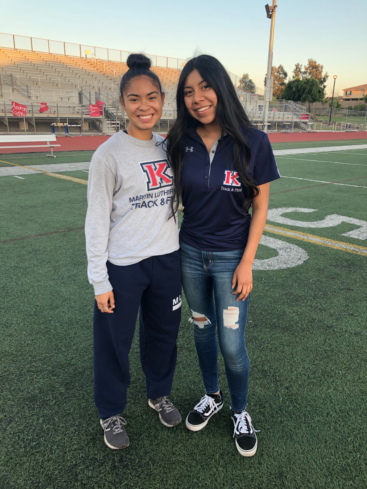

Noemi Diaz
What drove me to enter the field of psychology was the desire to help people. To be frank what I have learned and seen from psychology
is that its teachings are universal. Whether one decided to go into advertising or into the medical field, an education in psychology would be a great asset
to have. Personally, what I enjoy most about psychology is its connection with people. I enjoy helping and talking to people, which makes this field perfect for me.
That being said, as great as the world of Psychology may be, there is also a darker much grimmer element towards it as well. If I am being honest, the eye-opening
moment that led me into the world of psychology did not begin with a very joyful story.
My passion for psychology sparked about three years ago. It was at this time when I found myself helping a friend that was struggling with depression. It was a frightening
matter: having him reach out to me for help, yet refusing to speak to his parents or an adult capable of providing assistance. I turned to my psychology
teacher and school counselors to get him support and fortunately he came to accept help. The entire situation was very intense, but it was also at this time that the world of
psychology started to take a whole new meaning to me.
It was here when I began to question what these challenges meant and how or why they occur. Many of these questions were answered as I began to study the different fields
of psychology and the Diagnostic and Statistical Manual of Mental Disorders (DSM). Seeing the various ways that everyone can experience some form of mental health issues
in their lives, drove me to want to learn more about them in order to better suit myself for similar situations in the future. From this experience and those shared with my
peers I have realized that learning difficulties and mental health challenges, are universal, affecting people of all ages and backgrounds.
To further my interest in psychology, I began volunteering with first and third grade children at my local church. From the observations I have been able to take from working with
these kids I have seen the differences in the classroom. While there are some students that struggle just to sit, there are others that throw tantrums or refuse to be around others.
From this experience and those shared with my peers I have realized that learning difficulties and mental health challenges affect people of all ages and backgrounds. I’ve learned that
it is important to get support especially when these challenges interfere with your daily life.
Though I may not have had much experience in the work field, being that most of the work I have done has been volunteer work. In fact, I have been volunteering for about 4 years
now. I can truthfully say that my sole desire is to help people, I learn quickly, and I am great at working with people.
Experience
Leader
• Lead kids with a lesson inside the classroom
• Help develop and practice reading and writing skills
• Work with special needs students
Member
• Responsible for helping new members learn the routine
• Practice Latin dance styles such as Salsa, Bachata, and Cumbias
Track and Field Manager
• Worked alongside several coaches from both my school and several other schools
• Was in charge of organizing the meets and making sure they ran smoothly
• Helped train some of the athletes in their specific events
Education
UC Riverside
Portfolio
